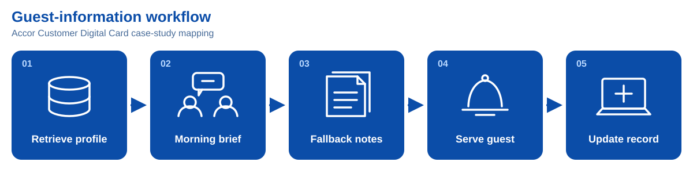
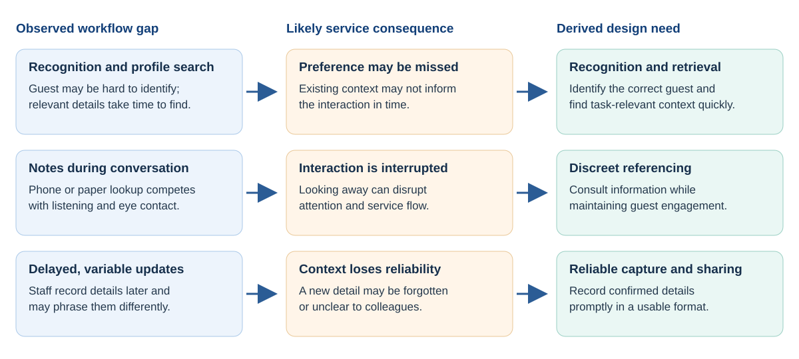

Executive summary
Hotels may collect guest preferences without making them available at the next service moment. This project investigates same-stay guest-context capture and reuse in a lounge, including for first-time guests with limited service history.
Semester 1 produced a working smart-glasses recognition-and-display prototype, a separate lounge-services scaffold, early preference-extraction experiments, and formative testing. The glasses app recognises against a loaded gallery and displays a name with fictional preference or allergy cues. Automatic conversation-to-profile updating and task-based cue selection are not integrated. P1, P3
Four successful warm frame commits averaged 1.18 seconds from handled temple tap to Android submission; this cannot establish p95 or physical lens visibility, and the report adopts a 1.0 s cue target; the supplied slide labels it <1 s. The revised speaker script uses the one-second target; an earlier draft said 1.5 s. A 20-minute comparison reported battery-gauge drops of 28 versus 9 percentage points for continuous and triggered operation. In a walkthrough with 10 non-hotel participants, all found activation easy and 70% saw potential usefulness, while natural cue use remained difficult. These findings guide further prototyping; they do not establish recognition accuracy, improved guest satisfaction, or hotel performance. Next, the team should test extraction, cue relevance, and the complete handover against ordinary profile lookup with hotel staff. P1, P4, P7
1. Introduction
How do hotel guests decide where to stay? Various factors influence these decisions, including price, reviews, and ratings. Singapore is home to 400+ hotels [e]. Yet, in the luxury hotel industry, only 5 players have captured nearly 50% of the market [f]. A discussion with the partner hotel (Appendix E) revealed that the hotel’s revenue is decreasing significantly due to increasing manpower and operational costs. Hence, this project aims to explore how luxury hotels generate revenue to become key players.
2. Problem Identification
2.1 Iterations: Manpower and Satisfaction Stagnation
Based on interviews across various hotels in Singapore, manpower shortages and retention was identified as a common issue (Appendix). The shortage often leads to cognitive overload among staff, preventing them from meeting certain service standards (Appendix). In recent years, this has led to a stagnation in guest satisfaction, driven by rising customer expectations (Appendix). Iterating through these problems led to the conclusion that all these issues contribute to the overarching problem faced by the industry partner: revenue generation.
2.2 The Revenue Problem
While revenue can be increased by decreasing costs, this can compromise the quality of luxury services in an industry already struggling with external factors driving up cost. Hence, profit generation will be the aim of this project. Revenue in hotels is measured by Revenue Per Available Room (RevPAR) [source]. It is represented by
RevPAR = ADR OR
Where ADR represents Average Daily Rate of the hotel [source] and OR represents Occupancy Rate [source]. While there are common factors affecting both, such as location, season, economic conditions, and competitor landscape, the classification (star rating) of a hotel significantly affects ADR while reputation and reviews affect OR [source].
2.2.1 ADR and Service Quality
Ratings of hotels depend on their quality, and are assessed by the Leading Quality Assurance (LQA) framework [source]. While these criteria span across emotional intelligence, service quality, efficiency, and more, a large number of standards strongly link to personalized service. Currently, there is a gap in delivering human-centered service, with the partner claiming that staff fail to notice emotional cues like sick guests in the lobby (Appendix).
2.2.2 OR and Customer Satisfaction
Hotel reputation and reviews depend on customer satisfaction. Satisfaction drives increased retention rate and guest acquisition–measured by an increase in Net Promoter Scores (NPS) [source]. This subsequently increases hotel occupancy rate. Satisfaction significantly increases loyalty, as shown by a guest survey (Appendix) in consensus with Marriot’s occupancy analysis (Figure). However, the industry partner is facing “single-digit retention rates” (Appendix).
Guest satisfaction has stagnated over the past few years (Figure) [source], due to rising guest expectations. Different guest demographics expect different services and amenities [a]. Scaling automations to increase overall satisfaction leads to standardization, failing to address the unique expectations of the individual [b].
2.2.3 The Need for Personalization
Hence, it is established that revenue depends on both service quality (driving ADR), which demands interpersonal service and customer satisfaction [Medallia] (driving OR) which requires addressing individual expectations. Synthesizing these needs leads to the demand for personalization in the luxury hotel industry.
This is further supported by the following:
86% of travelers sought at least 1 aspect of their experience to be personalized [c] 61% of consumers are willing to spend more for personalized experiences [d] 87% of guests are more likely to recommend a hotel if they receive a personalized experience (Appendix)
The broader case for personalised hotel service leads to an operational question: can staff obtain and use relevant guest information at the moment it is needed? In a Medallia survey of 1,749 hotel guests, 23% rated their recent stay 9 or 10 for personalisation, while recall of the surveyed in-stay elements averaged 46%. Perceived personalisation was associated with satisfaction, although the survey does not establish that access to guest data caused either outcome. The finding directs attention to service encounters, where recorded information must become a useful staff action. R2
2.3 Current guest-information workflow
2.3.1 Accor Customer Digital Card (ACDC) Case Study
The Accor Customer Digital Card case study maps a five-stage information cycle. A general manager retrieves guest details from a database and communicates relevant points in a morning briefing. Hard-copy or WhatsApp notes can serve as a fallback when staff need to check a detail. During service, staff draw on the briefing or profile while learning new preferences or concerns through conversation. They enter newly learned details into the database afterwards, potentially making them available for later encounters. P1 This sequence is a case-study mapping, not a measured description of every hotel or of PARKROYAL's daily operations.

Information must cross several human and system handoffs in this cycle. Staff need to remember or find the right profile, select a detail relevant to the immediate interaction, and record new information accurately enough for another employee to use. A stored profile therefore has limited service value if access is slow, consultation interrupts conversation, or updates arrive after the next encounter.
Information may already exist but remain difficult to act upon because it is separated from the service task, carried in a briefing that staff must remember, or entered only after the encounter has ended. Each route puts a different demand on staff: recall, search, or delayed documentation. These demands are especially consequential during short face-to-face exchanges, when there is little time to recover a missed detail.
2.3.2 The Gaps
The guest-journey mapping identifies three related gaps. First, recognising a guest from a description or profile photograph and filtering the profile can be difficult; a stored preference may consequently be missed. Second, consulting notes or a phone during conversation can divert attention from the guest while staff are expected to listen and engage naturally. Third, a busy employee may postpone an update, and different staff may phrase the same information differently, reducing its reliability for colleagues. P1
Guest identification and information relevance are distinct problems. Finding a profile quickly is insufficient if it belongs to the wrong person; finding the correct profile is also insufficient if staff must search through unrelated details while serving the guest. A preference about a drink may matter at the lounge, whereas a room-setting preference may not. The design need is therefore timely access to the right information for the right guest and task. This is a design inference from the mapped journey, not evidence that a particular retrieval method will improve service.

The resulting needs are recognition and rapid retrieval, discreet referencing during service, and prompt, consistent capture of confirmed information. They form a connected information cycle: the correct guest must be identified before a cue is useful, and a new detail must be recorded in a usable form before it can support a later interaction.
2.3.3 The First-Time Guest Problem
Returning guests may have accumulated preferences and established rapport; first-time guests may have booking or pre-arrival details but less recorded service history. Their initial encounter is therefore an important opportunity to learn a specific, guest-confirmed detail. If that detail is captured and shared in time, another employee could use it during the same stay. If it remains only in one staff member's memory, the next interaction begins with much of the same information gap.
This creates a possible feedback pattern: limited history offers fewer cues for tailoring service, while failure to capture what is learned leaves the history limited. The pattern is a hypothesis, rather than an established explanation of guest behaviour. It also shows why the first stay is a useful test case. The goal is not to build a complete long-term profile immediately; it is to determine whether one relevant detail from an early interaction can reach a later employee accurately and in time to inform their service.
An industry-partner account reported a single-digit first-time guest retention figure, but its cohort, definition, and time period were not supplied. It is treated here as a preliminary observation, not a verified baseline or evidence that limited personalisation caused low retention. P1 The proposed same-stay handover is consequently a design opportunity to test, rather than a demonstrated route to higher return visits.
2.4 Design Challenge
The problem is to make guest context available across encounters while preserving natural service. For the first employee, this means recognising the guest and recording an explicit preference or concern with sufficient context. For the next employee, it means finding the correct, relevant detail quickly enough to act on it appropriately.
The intended value differs across the service relationship. Staff may spend less effort recalling briefings or searching notes; guests may experience greater continuity between interactions; and the hotel may have a more dependable basis for consistent personalised service. The next stage must establish whether faster access and more reliable sharing actually help staff make better service decisions without adding disruption or creating incorrect guest associations. These needs lead to the project's design question:
How might we enable luxury hotel staff to capture, share, and access relevant guest information seamlessly so that they can deliver consistent, personalised, high-quality service?
These problem findings lead to the functions, service criteria, and boundaries in Chapter 3: Aim, scope, and requirements.
3. Aim, scope, and requirements
The preceding problem analysis identifies three needs: recognise and retrieve guest context quickly, refer to it discreetly during service, and capture new information reliably. These needs concern continuity across encounters. A guest-stated detail must be captured with its context and made available to another employee at the relevant service moment. This section translates the design challenge into two functions and four service criteria, providing a common basis for comparing phone/PMS, audio-cue, and smart-glasses concepts. P1
First-time guest use case. A first-time guest may have booking or pre-arrival details but limited recorded service history. The target is to capture one useful, guest-confirmed detail during an early encounter and make it available to another employee during the same stay. For example, a request for unsweetened tea can inform a later lounge visit. A one-off request retains its encounter or stay context rather than becoming a permanent preference.
Functional requirements. The solution has two linked functions: capture and process guest context, then select and display information for the current service task.
| Function | Required behaviour | Output |
|---|---|---|
| Capture and process | In the proposed complete workflow, one tap starts guest recognition and conversation recording together. Extract explicit guest preferences, requests, or concerns with supporting wording, source, timestamp, guest association, and current-stay context. Prepare a draft for staff review, correction, and approval before saving. | Time-stamped interaction draft associated with the guest and stay; shared only after staff approval. |
| Select and display | Retrieve the guest's context, select the smallest detail relevant to the current location, task, and urgency, and present it as a concise cue. Suppress personal cues for unknown, ambiguous, stale, or lost guest associations. | A short, actionable prompt for the employee serving the guest. |
Service criteria and proposed measures. The selected PARKROYAL F&B LQA items connect the functions to timely acknowledgement, active listening, natural engagement, and personalisation. P8, R4
| Criterion | Service behaviour | Design requirement and measure |
|---|---|---|
| DR1 · On-time service support | Timely acknowledgement and offer of service. | Deliver the first correct, readable cue within 1.0 s of deliberate activation. On enrolled-guest trials with a relevant stored fact, measure activation-to-visible-cue latency and count late, missing, or incorrect cues as target nonattainment. Assess unknown-guest cue suppression separately. |
| DR2 · Low-effort capture | Active listening and natural engagement. | Use one tap to start recognition and conversation recording together in the proposed workflow. Measure activation actions, capture time, correction effort, and disruption to listening. |
| DR3 · Glanceable interaction | Natural engagement and discreet use of the guest's name. | Present the name and up to two task-relevant cues. Measure correct interpretation, glance duration, attention shifts, missed guest information, and conversational interruption. |
| DR4 · Preference continuity | Use guest-confirmed information during a later encounter. | Preserve the statement, source, timestamp, and current-stay context. Measure whether another employee retrieves the correct detail for the correct guest and uses it appropriately during the same stay. |
Cue timing. Shiwa et al. (2009) found that preference for a communication robot's response peaked at one second. This finding informs the project's 1.0-second cue-response target. Applying a robot-response result to smart glasses is an analogy to test, not a smart-glasses standard or LQA requirement. The defined measurement includes capture, guest association, transfer, and rendering, ending when the first correct, readable cue appears. R12
These requirements guide the concept comparison in Chapter 4.
4. Concept generation and selection
4.1 Functional comparison of the concepts
Three main concepts address the same first-stay scenario: a guest shares a preference, and another employee uses it during a later encounter. The concepts combine alternative methods of capture, guest association, processing, and cue delivery. A camera-free glasses configuration is also considered as a control to isolate the display's contribution. P1
| Function or consideration | Phone/PMS baseline | Audio badge + earpiece | Vision-assisted smart glasses |
|---|---|---|---|
| Capture | Staff type a note during or after the encounter. | A deliberate trigger captures speech hands-free. | The proposed tap starts recognition and conversation recording together. |
| Guest and stay association | Staff select the guest and stay in the profile. | Staff select the guest through a companion interface. | Visual matching supplies guest context; uncertain matches lead to normal greeting or manual lookup. |
| Processing and storage | Staff enter the information manually. | Speech processing extracts guest-stated information with source and stay context. | The same speech-processing function is combined with visual guest association. |
| Cue delivery | Staff navigate and read a separate screen. | A short spoken prompt conveys the relevant fact. | A brief visual cue appears near the line of sight. |
| Staff effort | Requires profile navigation and note entry. | Keeps the hands available; missed messages require replay and guest selection requires an interface. | Keeps the hands available and allows a brief recheck; fitting and display controls add device interaction. |
| Privacy and comfort | Uses the existing profile and handheld screen. | This configuration avoids a camera; microphone use, earpiece fit, volume, and leakage require consideration. | Camera, microphone, and display affect collection, fit, environmental awareness, and acceptance. |
| Fallback | Normal service and existing manual procedures. | Mute or replay the cue, or return to phone/PMS lookup. | Suppress personal details on uncertainty, then continue normal service or phone/PMS lookup. |
Guest association and cue delivery are separate design choices. A camera-assisted match can feed either a visual or spoken cue, and display glasses can use manual guest selection. A camera-free glasses configuration therefore provides a useful control for isolating the display's contribution. The baseline, capture method, guest information, and processing should remain consistent when comparing output modalities.
4.2 Literature-based benchmarking of visual and audio cues
We benchmarked the visual and audio concepts against published studies of competing speech, dual-task performance, and notifications during face-to-face interaction. This qualitative benchmark links the findings to the service criteria: preserving listening, keeping cues understandable, recovering missed information, and controlling attention demands. The cited studies use controlled tasks rather than hotel staff; they inform design hypotheses for a matched prototype comparison.
Spoken earpiece cues introduce another speech stream into a service conversation. Brungart (2001) demonstrated interference between simultaneously presented spoken phrases. A cue delivered while the guest speaks can therefore compete with the message staff are trying to understand. For this conversation-centred task, a concise visual cue lets staff consult a factual prompt without receiving another spoken message and choose their own wording when replying. R13
Visual presentation also places demands on attention. Lewis and Neider (2016) found that Google Glass information disrupted concurrent visual search. Ward et al. (2023) found interference from both HMD and audible word presentation during manual tracking. The selected display should consequently contain a small amount of task-relevant information, appear at an appropriate moment, and permit a brief recheck. R9, R16
| Benchmark consideration | Evidence from published research | Implication for the concept |
|---|---|---|
| Listening during conversation | Brungart (2001) found competing speech interfered with recognition of a target spoken phrase. R13 | Prefer a short visual fact during guest speech. Reserve spoken cues for on-request delivery or a suitable conversational pause. |
| Visual attention and workload | Lewis and Neider (2016) found HUD information disrupted visual search; Ward et al. (2023) observed tracking interference with HMD and audible words. R9, R16 | Keep either cue brief and relevant. Assess missed guest information and service interruption alongside cue comprehension. |
| Placement during social interaction | Rzayev et al. (2020) found notification position and alignment affected perception during face-to-face communication. R14 | Treat cue placement as part of the interaction design and assess whether staff can consult it naturally. |
| Visually demanding tasks | Nees and Sampsell (2021) found visual icon alerts disrupted visual tracking more than auditory tones. R15 | Retain audio as an alternative when visual attention is occupied. Distinguish a simple alert tone from a spoken factual message. |
For this conversation-led lounge scenario, we prioritise visual factual cues to avoid adding a spoken message while the guest is talking. Audio remains a comparator for visually demanding tasks; spoken prompts can be offered on request or between conversational turns. Google's AI-glasses guidance reinforces the display treatment: concise, glanceable elements that appear when needed and recede after the task. R8
For example, equivalent cues could communicate the same guest-stated tea preference: a short visual label or a brief spoken phrase. A matched comparison would measure correct comprehension, missed guest details, service action, time to act, conversational interruptions, rechecks or replays, and comfort. Keeping the fact and task constant separates the effect of the cue modality from the effect of receiving more or less information.
4.3 Selected concept and design rationale
Vision-assisted smart glasses are selected for the prototype because they package three functions for the lounge encounter: hands-free capture, guest-context retrieval, and a concise visual prompt. Capture can reduce device switching, matching can reduce profile search when reliable, and a short visual fact can be rechecked without adding another voice while the guest speaks. Staff remain free to choose natural wording. These features address DR2 and DR3, while guest association and same-stay information reuse address DR1 and DR4.
The phone/PMS workflow remains the baseline and manual fallback. The camera-free glasses configuration separates visual presentation from face matching, and the audio concept remains a comparator for visually demanding service tasks. The contribution is the connected service workflow: capture a guest-stated detail with its context, retrieve it for the correct guest, and present it when it supports another employee's service action.
Section 5.1 translates this selected concept into the proposed staff journey, linking the functional requirements to the interaction and capture design that follow.
5. System architecture and prototype development
5.1 Solution overview and staff journey
The proposed workflow carries one guest-confirmed detail from an early encounter to another employee's later service moment. It links capture, guest/stay association, staff review, and a task-relevant cue. Chapter 3: requirements, Chapter 4: concept comparison

Proposed staff journey
- Start recognition and recording. The employee taps the glasses once to start guest recognition and conversation recording together. Staff begin normal service while the system retrieves relevant context.
- Check guest association. A stable, sufficiently supported match enables personal context. For unknown, ambiguous, or lost matches, suppress personal details and continue with normal greeting or phone/PMS lookup.
- Present relevant context. Show only the small amount of information useful to the current task. A lounge drinks cue takes priority over an unrelated room preference.
- Confirm today's need. Staff use the cue to make a natural offer and confirm that the preference still applies, accepting corrections from the guest.
- Verify allergy information. Staff check the authorised guest record and the relevant menu or kitchen source before advising the guest or proposing food.
- Process the interaction. Extract explicit guest statements from the captured conversation and retain their supporting wording, source, timestamp, guest association, and current-stay context.
- Review and approve. Staff correct the wording and confirm the guest and stay before approving the update. The information remains a draft until this check is complete.
- Carry context forward. Another employee retrieves the approved detail during a later encounter, confirms the guest's present need, and uses it to support a suitable service action.
For example, a guest requests unsweetened tea during an early lounge visit. The information is associated with that guest and stay. During a later encounter, another employee receives the relevant cue and asks whether the guest would like unsweetened tea again. The detail informs the offer while the guest remains free to change their preference.
This journey defines the intended behaviour from a single activation to a later service encounter. Section 5.2: Capture develops the capture component through temple-touch activation, session timeout, and processing allocation. It connects these service requirements to the prototype's implementation decisions.
5.2 Capture
Capture iterations use measurable tests: battery depletion, traffic, silence-timeout duration, latency, and guest facts matched against expected answers. The intended path stores an explicit, time-stamped statement as a sourced draft, associates it with a likely guest/stay, and tracks scope and review status. Staff approval is required before the shared record is updated. Display ranks checked context by location, task, urgency, and validity. Text extraction is explored separately; audio capture and reviewed updates are not integrated.

5.2.1 Temple-touch activation
Continuous capture requires less staff input but keeps processing active between encounters. Reported battery life was only slightly over an hour, insufficient for a hotel shift. Temple-touch activation trades a single tap for longer battery life. P1
The timeout balances battery use with DR2, low effort: one tap starts capture, speech sustains it, and 15 seconds without speech ends it automatically, without repeated taps or a separate stop action. Expiry stops camera/microphone activity, cancels requests, and clears cues. Speech cannot activate idle capture. P3

Local WebRTC voice activity detection distinguishes speech-like activity from silence. The timeout was tested and verified at approximately 15.4 seconds in a quiet-room setting; restaurant and front-desk conditions still need verification. P3
The 20-minute battery experiment used a one-minute conversation every five minutes. Including the 15-second silence period gives 75/300 seconds of scheduled activity, or 25%. P1, P7
| Activation comparison | Continuous | Temple touch + silence timeout |
|---|---|---|
| Scheduled duty cycle | 100% | 25% |
| Reported traffic count | 705 | 170 |
| Battery-level drop | 28 percentage points | 9 percentage points |
Traffic fell by 75.9%; battery depletion fell by 19 percentage points, approximately 68% relative depletion. This measures battery-gauge change, not electrical power. P1, P7
5.2.2 Selective server processing
On-device photo recognition averaged 1,927.9 ms, longer than the proposed 1.0 s end-to-end cue target. SCRFD and ArcFace recognition dominated the component path, motivating selective offloading. Camera handling, tracking, crop preparation, and rendering remain local; the laptop handles recognition and lookup. This targets DR1 by keeping position updates responsive; a separate battery benefit remains unmeasured. P3, P5

In a 15-probe warm photo test, Wi-Fi offloading averaged 1,350.6 ms, about 30% below on-device recognition at 1,927.9 ms. The chart compares this isolated component, not full cue latency or p95 performance. Its protocol, observed ranges, and component timings are in Appendix D. P5
The offloaded mean remains above the proposed 1-second target, and the benchmark excludes camera, image preparation, and display. Only one CPU laptop was tested; a faster server or accelerated inference may help, but any gain needs complete-path testing (Section 6.2).
5.2.3 Independent preference-extraction testing
Text extraction is tested separately for DR4, preference continuity; written transcripts are not connected to glasses audio. Two synthetic conversations contained three expected guest facts. Qwen and Gemma each matched two facts, with Qwen fastest at 67.2 seconds per transcript. All models produced valid JSON, but Gemma misclassified a complaint and a safety question. These small tests provide examples for refinement, not general accuracy estimates. No result is written to a guest record; the full model comparison and checks are in Appendix D. P1, P13
Next, improve text-only extraction, then compare it with video from the same interactions to test whether visual context adds useful, supported detail. Evaluate audio transcription separately.
5.3 Display
Display testing uses user feedback on placement, readability, and relevance. The pipeline identifies the guest, retrieves their record, and returns cues.

5.3.1 Positioning information beside the guest
Initially, cues occupied a fixed display position. User feedback and prototype validation prompted face-relative placement and central guest selection, aiming to reduce looking away from the guest and competing details from several visible faces. These iterations address DR3, glanceability. P1, P7
Google ML Kit, an on-device machine-learning toolkit, detects faces and tracks positions locally; InsightFace identifies the guest. The central 30% of both view axes defines the selection region, choosing the face nearest its centre. This aims to show preferences for the guest receiving the employee's attention, avoiding details for everyone visible. Selection uses where the glasses point; it does not measure eye contact. P3, R11
Face coordinates also allow cropping before image preparation, removing a 2.2–2.4-second full-frame preparation delay. In an earlier SFace-model test, 14 uploads averaged 200 ms from image-analysis callback to server response. This supports the cropping change for DR1; the timing excludes tap handling and display and is separate from the current-model benchmark. P3
Before · fixed position

After · beside the face

5.3.2 Replacing descriptions with concise icons
Even beside the guest's face, long descriptions require staff to read while listening. To support DR3, the display instead shows a name and up to two icons. Preferences and allergy alerts must remain distinguishable. P1
Before · written description

After · compact icon

The main icon shows an item, such as coffee; its corner marker means preference (heart), dislike (crossed-out heart), or allergy alert (warning triangle). Icons appear beneath the name and are stored on the glasses, avoiding extra downloads. P3
The prototype shows at most two icons, puts allergy alerts first, and hides personal details when a guest is unrecognised or the face association is lost. Automated checks verify placement and that names and icons disappear together. P11
Concise information follows display guidance, but short symbols can still distract. User testing must check whether people understand the icons without coaching and use them without interrupting conversation. R8, R9
5.3.3 Retrieving contextually relevant preferences
The next proposed iteration selects information to fit the moment. Face recognition determines whose record to retrieve; conversation and service context determine which details to show. Location, task, urgency, and validity could rank the candidates: during breakfast, for example, a checked drink preference should take precedence over an unrelated room arrangement.

This addresses DR3 and the task-relevance safeguard: an easily understood room icon can still be unhelpful during a drinks order. The proposed filter would select relevant, checked preferences from the shared record (DR4), while retaining priority for allergy alerts under the hotel's verification rules. P1
Before · unrelated room preferences
Proposed after · relevant drink preference

Current status. The prototype shows up to two stored reminders, with allergy alerts first. It does not yet interpret conversations to select preferences; microphone activity only controls how long the session runs. P3
Testing should compare the same scenarios with and without filtering: does the system identify the topic correctly, show useful information, or hide something staff need? This tests relevance as well as readability.
5.4 Complete system architecture
Figure 13 combines the iterations in the Rokid RV101 → Wi-Fi/HTTP → laptop → display architecture. Solid paths describe current functions; the dashed extension is planned. P10

Communication. The glasses send one recognition request at a time to avoid a queue of old images. Late results are ignored so outdated details are not displayed. A swipe checks the server connection. P3
Recognition. The server compares faces with stored references. A match needs at least 0.45 similarity and must beat the next candidate by 0.10. Lowering the minimum from 0.50 reduced unrecognised results but may admit wrong matches. These scores measure similarity, not confidence percentages. P3, P11
Shared records. The server loads guest profiles into memory at startup. This speeds lookup, but database edits require a restart before displayed information changes. DR4 therefore still needs reliable updates reaching another employee. Unique guest IDs should replace name-based lookup to distinguish guests with the same name. Incoming camera images are not saved; unrecognised guests receive no personal details.
The dashed extension would add audio upload, local Whisper transcription, Gemini extraction, and staff-reviewed database updates. These are not connected to the glasses workflow yet. The separate card-entry prototype is also not integrated. P6, P10
6. User validation and system evaluation
This chapter checks the requirements in Chapter 3 and the concept taken forward in Chapter 4 against the narrower demonstrated journey in Chapter 5. It distinguishes observed prototype behaviour from the proposed capture-to-approved-record-to-next-employee workflow.
6.1 User validation
A formative walkthrough with 10 non-hotel participants examined activation, usefulness, and cue use. It supports problem finding, not proof of improved hotel service. P1
| Walkthrough question | Reported finding | Design implication |
|---|---|---|
| Is starting capture/display easy? | All 10 described activation as easy. | Retain single-tap activation; test it during realistic staff tasks. |
| Could cues help serve guests? | 70% saw potential usefulness, but some icons were unrelated to the conversation. | Develop contextual retrieval and assess whether it enables a specific service action. |
| Can cues be used naturally? | Most described a quick glance as sufficient, but incorporating cues into conversation was challenging. | Test timing, meaning, and conversational flow together; investigate design changes as well as training. |
Understanding an icon and using it in conversation are different tasks. A participant may recognise a coffee preference but be unsure when to mention it. The feedback connects shorter icons (Section 5.3.2) with relevant selection (Section 5.3.3): staff need information that fits the current interaction.
This non-staff study did not compare profile lookup or measure gaze and attention, so it cannot establish improved service or reduced distraction.
6.2 Design requirements and whole-system testing
Testing covers tap → guest selection → recognition → profile retrieval → display. Conversation-to-approved-update and next-employee use remain incomplete. Findings map to Chapter 3's requirements.
On 3 November, 13 live activations included quick repeat taps while capture was already running. Five produced a recognised name and icons in the app's drawing process; four also recorded an Android frame commit, confirming a completed frame was submitted for display. These four averaged 1,180 ms, median 1,198.5 ms, range 974–1,349 ms. P4
| Measured stage, four completed frames | Mean |
|---|---|
| Tap handled → selected image sent: camera, face selection, image preparation, scheduling | 693 ms |
| Request sent → server response read, including recognition | 302 ms |
| Response read → app draws name and icons | 101.3 ms |
| Drawing → Android confirms frame submitted | 83.8 ms |
| Total | 1,180 ms |
Server recognition took 177.5 ms within the 302 ms request stage; it is not an additional delay. The largest delay was before sending the image, so optimisation must address capture and selection as well as server speed. Another activation took 4,412 ms to draw information without a completed frame recorded before the next tap; eight had no accepted name/icon output before another tap. Repeat taps can interrupt processing, so these counts do not establish a success rate. Independent starts from idle and physical on-lens timing still need testing.
| Requirement | Current evidence | Assessment and next verification |
|---|---|---|
| DR1 · On-time support: proposed 1.0 s trigger-to-correct-visible-cue target | Four successful warm commits averaged 1.18 s; this does not establish the end-to-end 1.0 s target, include cold starts, or include every interrupted attempt. | Target attainment not established. Repeat independent cold/warm trials and count all failures; report p50/p95 and the proportion of valid attempts meeting the 1.0 s target. |
| DR2 · Low effort: single tap and automatic silence expiry | All 10 participants found activation easy; checks verify timeout and camera/microphone shutdown. | Early support. Test staff task interference and stopping behaviour in realistic noise. |
| DR3 · Glanceability: concise cues during conversation | Icons are implemented; 70% reported needing only a quick glance, but natural conversational use remained difficult. | Partially achieved. Compare comprehension, attention shifts, and conversational flow with a baseline. |
| DR4 · Preference continuity: approved update reaches another employee | Stored profiles are retrieved; new facts are not consistently extracted and profile changes require restart. | Incomplete. Test captured statement → review → updated record → next employee's action. |
| Cross-cutting safeguard · Correct association: hide uncertain/outdated details | Tests check unrecognised guests, tracking changes, expired results, and cancellation. | Safeguards implemented; real-world error rates unknown. Count wrong guest details and missed matches in new, crowded test scenes. |
| Cross-cutting safeguard · Appropriate information: relevant fields and distinct allergy handling | Two-cue limit and fictional allergy markers exist; irrelevant content was reported. | Partially achieved in demo data. Validate contextual selection, interpretation, permissions, and fallback. |
Retrieval and display work; the service benefit and complete handover still need evaluation. The photo benchmark and four live frame measurements cover different stages and must be reported separately.
6.3 Limitations and guest acceptance
In an exploratory survey, 40.7% rated hotel preference storage 4 or 5. The denominator and recruitment method are unavailable, so this is not a representative acceptance estimate. Comfort with storing preferences does not establish acceptance of facial images or recorded conversations; a lounge entry tap is not permission for every proposed use. Real-person studies need an approved purpose, notice, access, and retention protocol with the hotel and university. The PDPC biometric guide is a reference for review, not approval for this hospitality use. P1, R10
The current microphone uses local activity detection only. Audio transcription and an external model would require separate review. Recognition safeguards and fictional allergy icons have not been evaluated for representative error rates or food safety. These limits define the next study; the present prototype remains useful for finding usability and integration problems.
6.4 Next development and validation steps
Chapter 7 sets out the next-stage work plan; Appendix B gives a comparative evaluation protocol.
7. Limitations, responsible use, and next-stage plan
The recognition-and-display prototype is the strongest interim outcome; the full handover from a guest statement to another employee's service action remains unvalidated.
Next-stage controls. Suppress personal cues for uncertain matches. Save only source-supported preferences after staff confirms the guest, stay, and scope. Verify allergy details against an authorised record and food-safety source. Obtain hotel and university approval for guest and employee data collection; a lounge tap does not authorise face or audio capture. Keep LQA output evidence-linked and human-reviewed, not a staff ranking. P2, P8, R10
| Window | Work | Evidence or decision |
|---|---|---|
| Weeks 1–2 | Agree one lounge task, staff roles, profile path, permissions, and study protocol. | Approved workflow and baseline task. |
| Weeks 2–4 | Label extraction examples, including corrections, ambiguity, and multiple speakers. | Supported/unsupported facts and attribution errors. |
| Weeks 3–5 | Add staff correction and contextual retrieval for one F&B task. | Confirmed update reaches the next employee. |
| Weeks 4–6 | Test recognition edge cases, cold/warm latency, and longer battery use. | Count all activations, misses, false reveals, and failures. |
| Weeks 6–8 | If approved, compare phone and glasses with 6–8 hotel staff. | Correct action, cue comprehension, task time, interruption, and feedback. |
| Weeks 9–10 | Refine failures and demonstrate the complete same-stay handover. | Requirements check and decision on the wearable direction. |
Proposed acceptance gates: no wrong-profile reveals in the defined test set; source-supported approved preferences; reliable no-match fallback; and improved task performance without poorer comprehension or conversation flow. A zero-error result remains limited to the tested sample. Cost and return on investment need later evidence on hardware, infrastructure, integration, maintenance, and training.
8. Team contributions
The team confirmed the following division, following the presentation split. This records the main areas of work without assigning undocumented individual ownership of particular experiments. P7
| Team member | Main area of contribution |
|---|---|
| Neha Rajan | Problem investigation and framing; hotel/business context, service quality, and the rationale for personalisation. |
| Nigel Yeo Tong Wei | Problem investigation and framing; current guest-information practices, first-time guest needs, and the design challenge. |
| Wong Weng Hong | Solution development: functional requirements, concept comparison, and the proposed staff/guest journey. |
| Tan Ping Hui | Solution development; technical implementation, prototype iterations, testing, and the next development steps. |
The interim contribution is an implemented service-support mechanism and a clearer account of what must be tested next. Whether the mechanism improves hotel service remains the central evaluation question for the next stage.
References and project evidence
R1. Lei, S. S. I., Wang, D., Fong, L. H. N., & Ye, S. (2024). “Recipe for perceived personalization in hotels.” Tourism Management, 100, 104818. Institutional publication record and abstract · DOI.
R2. Medallia Market Research (2024). Understanding Personalization Efforts in the Hospitality and Retail Industries. Original report. Vendor-produced U.S. guest survey.
R3. Piccoli, G., Lui, T.-W., & Grün, B. (2017). “The impact of IT-enabled customer service systems on service personalization, customer service perceptions, and hotel performance.” Tourism Management, 59, 349–362. Author-hosted article · DOI.
R4. LQA. Hotel assessments. Public description of its quality-assessment framework; accessed 10 November 2026.
R5. Oracle. OPERA Cloud 25.4: Profiles. Official product documentation; accessed 10 November 2026.
R6. hotelkit. Guest services. Vendor-described request assignment and complaint follow-up; accessed 10 November 2026.
R7. SoftServe. Hands-Free Face ID. Public AR identification demonstration; accessed 10 November 2026.
R8. Google. AI Glasses design principles. Official design guidance; accessed 10 November 2026.
R9. Lewis, J. E., & Neider, M. B. (2016). “Through the Google Glass: The impact of heads-up displays on visual attention.” Cognitive Research: Principles and Implications, 1, 13. Open-access article.
R10. Personal Data Protection Commission Singapore (2022). Guide on Responsible Use of Biometric Data in Security Applications. Scope: security applications. See also Personal Data Protection Act 2012, Singapore Statutes Online.
R11. Google. Face detection documentation. On-device detection and tracking, distinct from identity recognition; accessed 10 November 2026.
R12. Shiwa, T., Kanda, T., Imai, M., Ishiguro, H., & Hagita, N. (2009). “How Quickly Should a Communication Robot Respond? Delaying Strategies and Habituation Effects.” International Journal of Social Robotics, 1, 141–155. DOI and publisher abstract. Used only as an analogy for the proposed response target.
R13. Brungart, D. S. (2001). “Informational and energetic masking effects in the perception of two simultaneous talkers.” Journal of the Acoustical Society of America, 109(3), 1101–1109. DOI · Author’s institutional abstract.
R14. Rzayev, R., Korbely, S., Maul, M., Schark, A., Schwind, V., & Henze, N. (2020). “Effects of Position and Alignment of Notifications on AR Glasses during Social Interaction.” Proceedings of the 11th Nordic Conference on Human-Computer Interaction. DOI and conference paper. Face-to-face notification study with 32 participants in 16 pairs.
R15. Nees, M. A., & Sampsell, N. G. (2021). “Simple auditory and visual interruptions of a continuous visual tracking task: modality effects and time course of interference.” Ergonomics, 64(7), 879–890. DOI. The alerts were simple visual icons and auditory tones in a laboratory tracking task.
R16. Ward, M. D., Smith, S. L., & Helton, W. S. (2023). “Dual-task Interference while Receiving Information on a Head Mounted Display, Visually on the Same Depth Plane, or Audibly.” Proceedings of the Human Factors and Ergonomics Society Annual Meeting, 67(1), 888–892. DOI and publisher abstract. Compared HMD, same-plane visual, and audible word presentation during manual tracking.
P1. Team IS-432 (5 November 2026). Interim presentation, 37 slides; presentation recording, 29 min 18 s; timestamped transcript. Slide numbers in this report refer to the supplied PDF.
P2. Project field records: Novotel formatted visit notes; PARKROYAL visit summary; later PARKROYAL discussion transcript and source caveats. These records have different evidence quality; formatted field notes are paraphrases.
P3. Rokid prototype implementation and validation notes; Android implementation; demo guest cue schema and rendering.
P4. Temple touch to displayed information, live RV101 series, 3 November 2026. This is the source for the four frame-commit observations and their timing boundaries.
P5. Server versus on-device photo-recognition benchmark and retrieval-mode and battery replay comparisons, 2 November 2026.
P6. Local POC scaffold; interactive proposed architecture; project framing. Architecture status remains proposed.
P7. Team clarifications, 10–11 November 2026: the 20-minute battery test was verified; no local raw file is available. Neha/Nigel mainly addressed the problem; Weng Hong/Ping Hui the solution. Battery life motivated temple touch; user feedback/validation preceded face-relative placement and central selection.
P8. Current selected 15-item F&B table · PDF preview · checker evidence and evaluation guidance. The current table supersedes earlier candidate-list numbering.
P9. CDE4301 interim assessment brief and rubric. Four-person group: 6,000-word limit excluding appendices; individual areas of work must be identified.
P10. Full Rokid system architecture · scalable SVG. Adapted from rokid/output/architecture/rokid-system-architecture.svg: local detector label generalised; architecture unchanged. The dashed audio-preference extension remains planned.

P11. Implementation-level checks: Android unit tests for session, focus, tracking, and image buffers; device tests for microphone/VAD, request deadlines, and cue rendering; server recognition, API, and guest-cue tests. Test presence describes verification coverage; recorded execution results are attributed to P3.
P12. Generated prototype UI illustrations, reproduced unchanged: position, content, and context before/after pairs. Pipeline diagrams redraw the supplied presentation's flows; contextual filtering remains proposed.
P13. Team-supplied “Note worker testing” summary, provided 11 November 2026. Transcribed method and reported findings. Synthetic text-only evaluation; raw model runs are not supplied.
Appendix A. Evidence reconciliation
This appendix records differences between presentation summaries and the narrower evidence retained in the repository. It makes the report's interpretation reproducible without changing the supplied slides or recording.
| Presentation statement | Treatment in this report |
|---|---|
| Slide 23 shows a <1 s cue target; an earlier speaker-script draft said 1.5 s | This report adopts 1.0 s as the proposed target, and the revised speaker script uses the one-second target. The value is informed only by analogy to a communication-robot response study, not an LQA rule or a direct smart-glasses standard. The supplied slide's <1 s label expresses the same one-second goal. Four successful warm frame commits averaging 1.18 s do not establish end-to-end target attainment, p95, failures, cold-start performance, or physical lens visibility. |
| Slide 27: 67% “power reduction,” traffic 705 → 170, battery 28% → 9% | Included as a team-confirmed 20-minute test. The directly reported quantity is battery-level depletion. The relative reduction calculated from the rounded values is 67.9%; electrical energy and average power were not measured. |
| Slide 28: 30% faster, 1.69 → 1.18 s, average over 15 runs | Kept separate from documented protocols. The reproducible 15-probe photo test measured 1.9279 → 1.3506 s, also approximately 30% faster. The 1.18 s figure is supported by four successful warm frame commits in a different live series; a paired 15-run touch-to-display comparison is not archived. |
| Slide 28: three local extraction models | Timing retained from the presentation; P13 adds the text-only protocol, JSON checks, six targeted staff labels, three guest facts, and reported errors. These are exploratory summaries, not broad accuracy estimates or a complete LQA score. |
| Slides 33–34: 70% usefulness / quick glance | Attributed to the team's 10-person non-staff walkthrough. The two questions are not treated as interchangeable objective performance measures. |
| Slide 35: >40% willingness, “rated >4/5,” extended to facial images and purchase history | The displayed preference-storage chart has 31.3% at 4 and 9.4% at 5: 40.7% rated 4 or 5, while only 9.4% rated above 4. The displayed question does not establish willingness to share facial images, purchase histories, or recorded conversations. Recruitment and denominator are not given. |
| Slide 19: first-time guests have “no information” | Narrowed to limited prior-stay history. Pre-arrival and same-stay information can already exist. |
| Slide 11 / speech: loyalty membership treated as returning-guest share | No retention estimate is derived from membership. Membership and a completed repeat stay are different measures. |
| Slides 7–8: LQA and classification | Used as a quality/service framework. LQA assessment is not treated as the authority assigning hotel star classification. |
| Demonstration describes “eye contact” | Described technically as a centred face/head-direction proxy. The current prototype has no eye tracker. |
Appendix B. Reproducible next-stage evaluation
Staged service comparison. Recruit an approved formative staff sample, record role and relevant experience, and use synthetic profiles with consenting role-play guests. Counterbalance phone and glasses conditions and scenario order. Give both conditions the same guest context and equal practice. Include a relevant drink preference, an unrelated room preference, a corrected preference, an unknown guest, two nearby enrolled guests, a fictional allergy alert, and a disconnected-server case.
For each trial, record activation, first correctly rendered cue, correct interpretation, chosen service action, interruptions/attention shifts, assistance, and completion. Count all attempts, including no-result cases. Ask the role-play guest whether the action fitted the stated need. Use an observer and a fixed rubric; separate interpretation errors from wrong guest association and model extraction failures. Report participant-level results and uncertainty rather than treating repeated trials from one wearer as independent users.
To isolate the output channel, add a matched role-play comparison that keeps the guest information, capture, processing, association method, and service task constant while varying only the cue: brief in-lens text; an equivalent short spoken earpiece prompt delivered on request or between turns; and the phone/PMS baseline. If proactive audio timing is explored, use a consenting role-play scenario and treat prompts during guest speech as a deliberate interruption condition, not a proposed service default. Record missed guest details, correct interpretation and action, interruptions or conversational repairs, attention shifts, time to an actionable response, cue rechecks or replays, staff workload, and role-play guest comfort. Report cue onset separately from the time needed to read or hear the actionable information.
Extraction evaluation. Define reference facts before comparing models. Two reviewers should identify the speaker, explicit statement, current-stay/enduring scope, and whether a preference is actually supported. Include negation, corrections, ambiguity, requests, complaints, and visual-only evidence. Report true supported facts, missed facts, unsupported facts, attribution errors, and processing time. Compare transcript-only and multimodal approaches on identical cases and retain model version, prompts, parameters, input hashes, and reviewed outputs.
Battery and latency evaluation. Repeat balanced conditions from comparable charge levels with the same brightness, network, gallery, capture policy, and workload. Include camera, microphone/VAD, inference, transfer, and display. Measure trigger-to-first-visible-cue latency across all attempts; report p50 and p95 only with enough independent observations, separate cold starts from warm retaps, and count misses, cancellations, and interruptions. Distinguish wall-clock duration, active time, traffic, battery percentage points, and measured energy. Software frame submission does not prove physical lens presentation.
Appendix C. Recording and supporting material
- Read and search the timestamped transcript.
- Download the transcript as Markdown, plain text, or WebVTT captions.
- View the original slide deck and recording.
- Read the fuller project research synthesis.
The transcript is machine-generated with terminology checks and uncertainty notes; it is not a certified verbatim or speaker-diarised record. Spoken claims are preserved as speech and do not acquire verified status merely by appearing in the transcript. The recording ends just as Q&A begins, so it does not contain a complete question-and-answer session.
Play the supplied presentation recording
Appendix D. Prototype recognition and extraction detail
Selective photo-recognition benchmark. Fifteen warm probes per mode used the same enrolled 800 × 800 image, five gallery identities, CPU execution, and 0.50/0.10 score and margin settings. Offline testing disabled Wi-Fi and stopped the laptop server. P5
| Warm photo-recognition path | Mean | Median | Observed range |
|---|---|---|---|
| Glasses → Wi-Fi → laptop → parsed response | 1,350.6 ms | 1,311.6 ms | 1,220.1–1,513.7 ms |
| Entire recognition on glasses | 1,927.9 ms | 1,896.0 ms | 1,848.6–2,379.7 ms |
On-device component means were 1,268.7 ms for SCRFD preparation, inference, and postprocessing; 639.1 ms for alignment, ArcFace inference, and matching; and 20.1 ms for JPEG decoding. The offloaded path was faster in this small warm test; it does not establish identity accuracy or complete touch-to-cue performance. P5
Text-only extraction test. Three local models processed two invented, speaker-labelled conversations containing three expected guest facts. A fixed JSON format recorded category, value, and supporting quote; automated checks compared outputs with the guest's words. Testing ran on an M1 Mac. P13
| Model | Valid JSON | Expected guest facts matched | Mean time per transcript |
|---|---|---|---|
llama3.2:3b |
2/2 | 1/3 | 76.1 s |
qwen3:4b-instruct |
2/2 | 2/3 | 67.2 s |
gemma4:e2b |
2/2 | 2/3 | 86.4 s |
Qwen is provisional: it matched Gemma's fact count and ran fastest. Gemma interpreted “too sweet” as a preference and a dessert-safety question as dietary information, despite valid JSON. The sample is too small to establish general accuracy; test negation, corrections, speaker attribution, ambiguity, and repeatability before integration. No outputs changed guest records. P1, P13